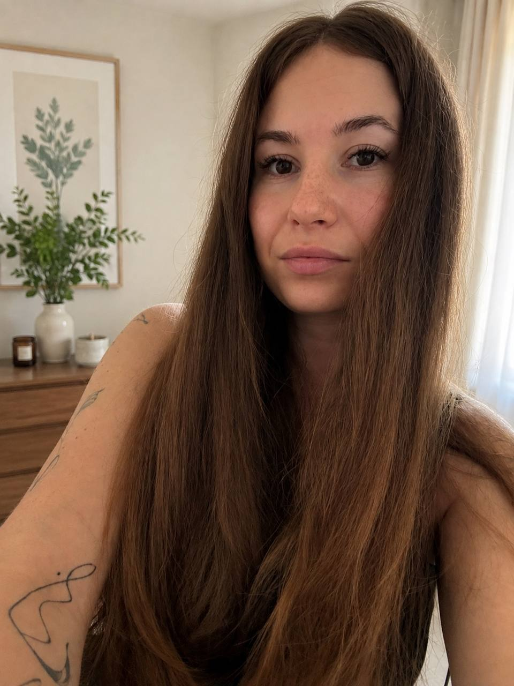

Татьяна Чупарнова
Гуманистический психолог

Мой подход
В основе моей работы — гуманистический подход. Я верю, что изменения происходят в живом, честном и бережном контакте. В своей работе я использую инструменты из разных подходов, но всегда — в гуманистическом ключе: с уважением к личности человека, его чувствам, опыту и собственному темпу.
Для меня терапия — не про то, чтобы исправить человека, а про отношения, в которых можно впервые получить опыт по-настоящему безопасного контакта. Самые глубокие раны часто возникают в отношениях — и самые глубокие изменения тоже происходят в отношениях.
Моя сильная сторона — поддержка. Я умею быть на стороне человека и оставаться рядом с его переживаниями, чтобы ему не приходилось снова быть с ними в одиночестве. Я не даю готовых ответов и не навязываю темп: помогаю больше чувствовать, лучше слышать себя, различать чужое «надо» и собственные желания, выдерживать сложные чувства и постепенно строить отношения по-новому.
Психологическая практика
Веду частную психологическую практику с 2020 года. За это время провела более 1 000 консультаций с клиентами.
С чем можно прийти
- Отношения с собой, самооценка, перфекционизм и поиск смысла.
- Трудности с эмоциями, чувством вины, подавленной агрессией и решениями.
- Отношения с близкими, материнство и детско-родительские отношения.
- Утраты, горе, кризисы, расставания, развод, смена деятельности и травматический опыт.
- Измены и трудности в сексуальной сфере.
Формат
Работаю с клиентами от 18 лет преимущественно в долгосрочном формате. Такой подход позволяет не только справиться с текущей трудностью, но и глубже исследовать её причины, устойчивые модели поведения и постепенно сформировать новые способы взаимодействия с собой и окружающими.
Встреча длится 60 минут; стоимость — 3 000 ₽.
Образование и квалификация
Прошла профессиональную переподготовку и программы повышения квалификации в АНО ДПО «Образовательный центр профессионального развития „Сфера“».
- «Телесно-ориентированная психотерапия» — профессиональная переподготовка, квалификация «Практический психолог», 508 часов.
- «Интегративное консультирование. Современные психотехнологии» — профессиональная переподготовка, квалификация «Практический психолог», 608 часов.
- «Основы клинической психологии. Психоаналитический подход» — 140 часов.
- «Супервизия в работе специалистов помогающих профессий. Интегративный подход» — 96 часов.
- «Психологическое консультирование и психотерапия нарушений сексуальной сферы» — 144 часа.
- «Гуманистическая психология» — 140 часов.
- «Методология ведения групповой работы и формирование навыка тренеров психологических программ» — 110 часов.
Связаться со мной
Напишите в любой мессенджер по номеру телефона:
8 920 961-46-09или